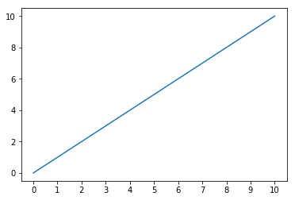
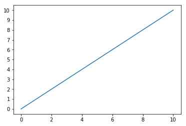
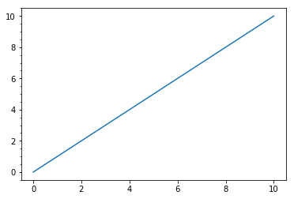
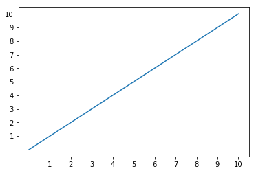

Adding More, Less, or Removing Ticks
Using all defaults, matplotlib will plot a straight line from 0-10 on both axes and return a tick for every even number.
This notebook explores changing that.
%pylab inline
x = y = np.linspace(0, 10)
fig, ax = plt.subplots()
ax.plot(x, y)Populating the interactive namespace from numpy and matplotlib
[<matplotlib.lines.Line2D at 0x5bae0f0>]

Adding Ticks
Most of the solutions you find when Googling “How to add more ticks?” will either do some messy list comprehension or something that looks like.
fig, ax = plt.subplots()
ax.plot(x, y)
_= ax.set_xticks(np.arange(0, x[-1]+1))
Instead, the matplotlib.ticks API has various TickLocator subclasses that make this much, much easier.
For instance, you can do a tick using every step along values in the y-axis, with the set_major_locator() function.
fig, ax = plt.subplots()
ax.plot(x, y)
loc = matplotlib.ticker.MultipleLocator(1)
ax.yaxis.set_major_locator(loc)
Or add minor ticks at twice the frequency with the corresponding set_minor_locator() function, and a different input to the MultipleLocator
fig, ax = plt.subplots()
ax.plot(x, y)
loc = matplotlib.ticker.MultipleLocator(.5)
ax.yaxis.set_minor_locator(loc)
Offset
Maybe you’re not interested in a graph that starts at 0. Using the ticker.IndexLocator class and modifying the base (better name would be step, IMO) and offset (how much you adjust each step by).
fig, ax = plt.subplots()
ax.plot(x, y)
loc = matplotlib.ticker.IndexLocator(base=1, offset=1)
ax.yaxis.set_major_locator(loc)
ax.xaxis.set_major_locator(loc)
Or if, for whatever reason, you wanted to align on fractional ticks, knock yourself out.
fig, ax = plt.subplots()
ax.plot(x, y)
loc = matplotlib.ticker.IndexLocator(base=1, offset=0.66)
ax.yaxis.set_major_locator(loc)
Removing Ticks Altogether
In another notebook, we mentioned how to hide ticks and labels by modifying their display properties. Here, we can use the NullLocator to never establish them in the first place.
fig, ax = plt.subplots()
ax.plot(x, y)
loc = matplotlib.ticker.NullLocator()
ax.yaxis.set_major_locator(loc)
ax.xaxis.set_major_locator(loc)